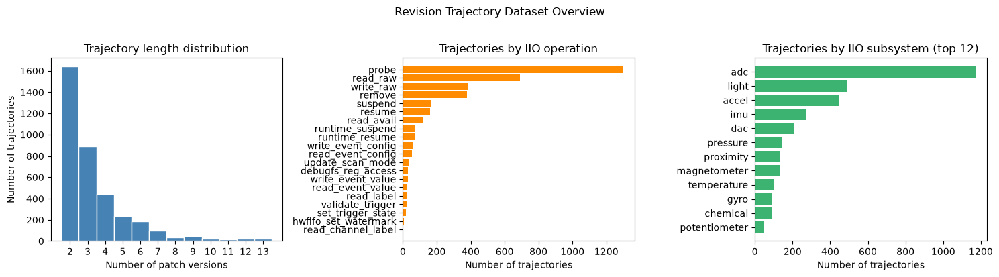
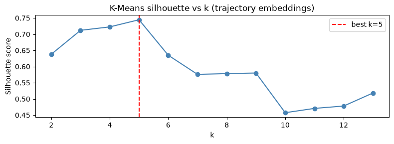
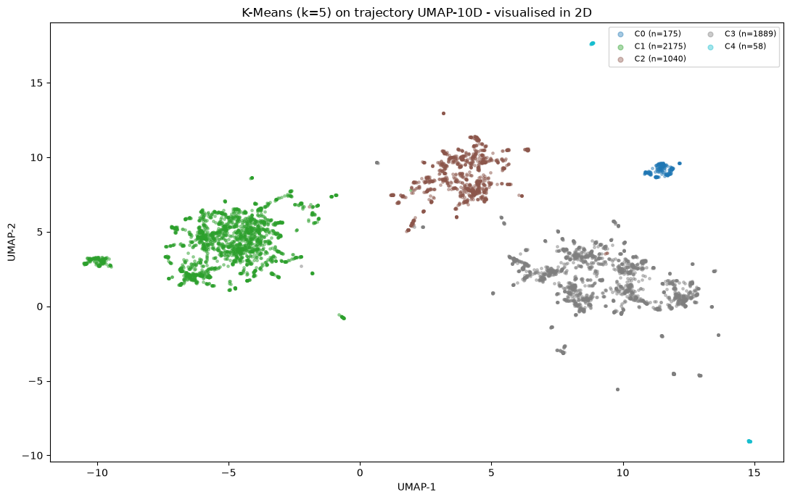
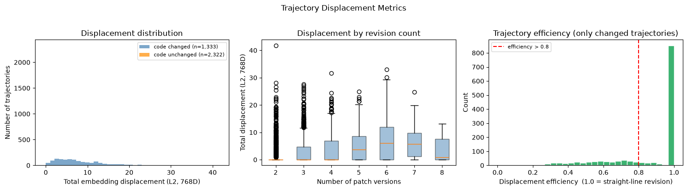
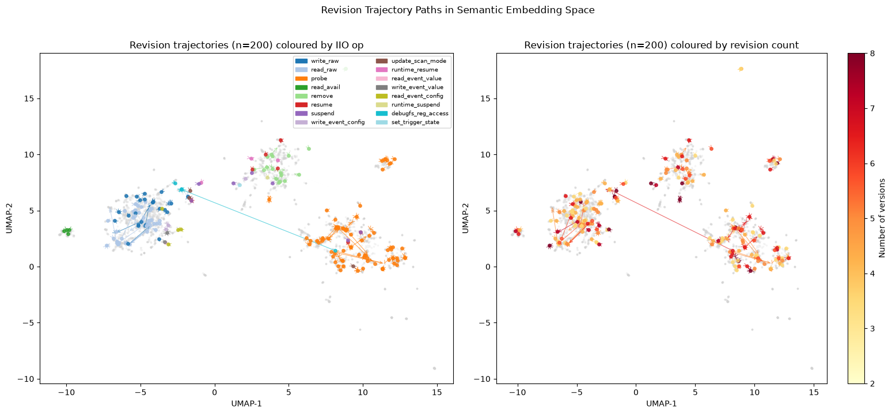
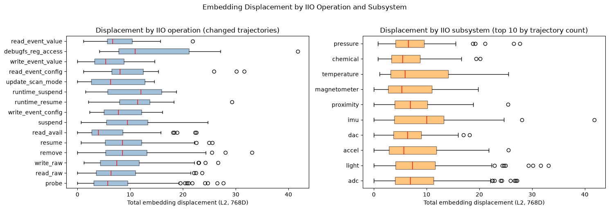
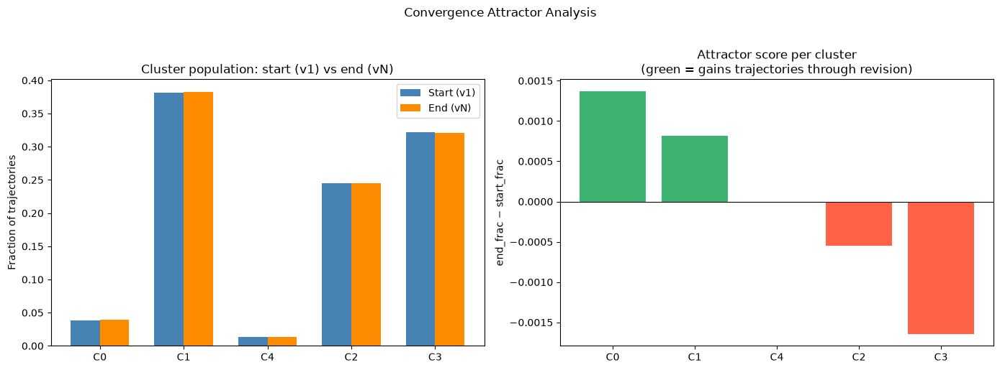

1) Pipeline
O objetivo é rastrear como a implementação de uma mesma função IIO evolui semanticamente ao longo das revisões de um patch, medindo deslocamento no espaço de embeddings entre versões consecutivas.
A identidade de uma trajetória é definida pela tupla:
(author, normalized_subject, file_path, function_name)
O pipeline executa cinco etapas sobre o data/iio_enriched.parquet:
- Extração de trajetórias: agrupa a mesma função por versão de patch usando a chave acima; mantém apenas grupos com ≥ 2 versões distintas;
- Embeddings: UniXcoder 768D por snippet único, com cache em
data/traj_embeddings.npy(5.337 snippets únicos); - Projeção UMAP: 2D para visualização e 10D como entrada para o clustering;
- Métricas de trajetória: deslocamento total, comprimento do caminho, eficiência e taxa de alteração de código;
- Análise de cluster: K-Means no UMAP-10D; matriz de transição início → fim e análise de atratores.
2) Visão Geral do Dataset de Trajetórias

probe domina (~1.300),
seguido por read_raw (~650) e write_raw (~400).
Direita: trajetórias por subsistema: adc domina (~1.200),
seguido por light e accel.
Dataset filtrado (IIO-ops, drivers/iio/, fontes válidas): 16.341 rows Após deduplicação por (chave, versão): 16.121 rows Trajetórias multi-versão: 3.655 Linhas (função, versão) em trajetórias: 12.327 Snippets únicos a embeddar: 5.337
A distribuição de comprimento de trajetória revela que patches IIO raramente ultrapassam 3 ou 4 revisões, o ciclo de revisão do subsistema é curto. O pico em 2 versões (1.640 trajetórias) reflete patches que foram revisados uma única vez antes de serem aceitos ou abandonados. Trajetórias com 10+ versões existem mas são raras, geralmente associadas a patches de longa controvérsia ou a contribuidores novos que precisam de muitas iterações para atender ao padrão de qualidade do maintainer.
A dominância de probe nas trajetórias é esperada: é a função mais
revisada de qualquer driver, pois concentra alocação de recursos, inicialização de
hardware e registro no core IIO, exatamente os pontos que os reviewers examinam com
mais atenção.
3) K-Means sobre Embeddings de Trajetória


O silhouette score de 0,745 para k=5 é notavelmente alto, consideravelmente acima dos valores observados na análise global do Relato 15, o que indica que o subconjunto de snippets pertencentes a trajetórias multi-versão tem estrutura semântica mais nítida do que o dataset completo. Uma hipótese é que funções revisadas múltiplas vezes tendem a ser as mais elaboradas (probe, read_raw de protocolos complexos), que naturalmente habitam regiões mais densas e separadas do espaço de embeddings.
O cluster C4 (n=58, isolado no canto inferior direito do mapa) merece atenção: sua separação extrema do restante sugere snippets semanticamente muito distintos, candidatos a implementações idiossincráticas ou experimentais.
4) Métricas de Deslocamento

Trajetórias com código alterado: 1.333 (36,5%) Trajetórias sem alteração de código: 2.322 (63,5%) Deslocamento mediano (alteradas): 6,655 (L2, 768D) Eficiência mediana de trajetória: 1,0000
O dado mais surpreendente é que 63,5% das trajetórias multi-versão não têm nenhuma alteração de código entre versões. Isso não é um defeito do pipeline, mas sim um comportamento real do desenvolvimento no kernel Linux: patches são frequentemente resubmetidos como parte de uma série reorganizada, com o corpo do diff idêntico mas o contexto da série (versão, dependências, changelogs) alterado. O dataset captura essa resubmissão como uma nova versão da trajetória, com embedding idêntico ao anterior, resultando em deslocamento zero.
Para as 1.333 trajetórias que de fato alteraram código, a eficiência mediana é exatamente 1,0, o que significa que a função se move em linha reta no espaço de embeddings entre a primeira e a última versão. Não há oscilações: a revisão vai diretamente de um ponto a outro sem retroceder. Isso sugere que as revisões IIO são geralmente cirúrgicas, o reviewer aponta um problema, o contribuidor corrige, o embedding reflete a mudança diretamente.
5) Trajetórias no Espaço Semântico

A visualização das setas confirma visualmente o que as métricas indicam: a grande maioria dos movimentos é local, a função se desloca dentro da mesma região densa do UMAP, sem cruzar para outra ilha. As poucas setas longas (visíveis como trajetórias que cruzam regiões distantes no mapa) correspondem aos casos de maior deslocamento total, onde uma revisão alterou substancialmente a estrutura da função.
A coloração por operação IIO (painel esquerdo) mostra que operações diferentes
habitam regiões distintas do UMAP mesmo no subconjunto de trajetórias, e que
as revisões preservam essa separação pois probe permanece em sua região,
read_raw na sua, etc.
6) Transições de Cluster
Para cada trajetória com código alterado, foram registrados o cluster K-Means da primeira versão (v1) e da última versão (vN). A matriz de transição mostra qual fração das trajetórias que começam em cada cluster termina em cada cluster.
Taxa de cross-cluster (todas as trajetórias): 0,3% Taxa de cross-cluster (apenas código alterado): 0,8% Taxa de cross-cluster (código não alterado): 0,0% Transições cross-cluster absolutas: 11
A taxa de 0,3% de transições entre clusters é o resultado central desta análise: o espaço semântico é extremamente estável sob revisão. Apenas 11 das 3.655 trajetórias cruzaram a fronteira de cluster entre a primeira e a última versão. A matriz de transição é, portanto, essencialmente diagonal, em que cada cluster retém quase todas as trajetórias que nele começam.
Isso tem uma implicação direta para a hipótese dos relatos anteriores: os clusters
K-Means capturam o tipo estrutural da função, não o seu estágio de maturidade.
Uma função probe de driver ADC que começa no cluster C1 permanece em C1
após a revisão, mesmo que o código mude consideravelmente. A identidade semântica
do cluster é robusta o suficiente para sobreviver a iterações de patch.
Os 11 casos cross-cluster são os candidatos mais interessantes para inspeção manual: representam revisões que mudaram o padrão arquitetural da função, por exemplo, uma migração de API ou uma refatoração que muda fundamentalmente como a função interage com o core IIO.
7) Deslocamento por Operação e Subsistema

Entre as operações, read_event_value e debugfs_reg_access
apresentam os maiores deslocamentos medianos, indicando que quando essas funções
são revisadas, a mudança semântica é substancial. Faz sentido: debugfs_reg_access
é uma função de diagnóstico cujo conteúdo varia amplamente entre drivers (endereços de
registrador, protocolos de leitura), e qualquer revisão que mude sua abordagem tem
grande impacto no embedding.
probe e read_raw, apesar de dominar em volume de trajetórias,
têm deslocamento mediano mais baixo, as revisões dessas funções tendem a ser
incrementais (correção de error handling, ajuste de nome de variável, adição de
um dev_err), sem mudar a estrutura geral da função.
Por subsistema, pressure e chemical lideram o deslocamento
mediano. Uma hipótese: sensores de pressão e químicos tendem a usar protocolos
I²C/SPI complexos com sequências de inicialização elaboradas, revisões nesse tipo
de driver são mais propensas a alterar fluxos de controle inteiros, não apenas
detalhes de surface.
8) Funções Mais e Menos Alteradas
Maior deslocamento semântico
function_name iio_op n_versions displacement efficiency bno055_debugfs_reg_access debugfs_reg_access 2 41,80 1,000 al3320a_remove remove 6 33,08 0,959 bh1745_read_event_config read_event_config 4 31,64 0,878 tsl2591_read_event_config read_event_config 6 30,17 1,000 ltrf216a_runtime_resume runtime_resume 6 29,31 0,619 hsc_spi_probe probe 3 27,65 1,000 mt6370_adc_read_label read_label 13 26,88 1,000
O caso de maior deslocamento absoluto, bno055_debugfs_reg_access
(displacement=41,8), é notável: apenas 2 versões, 1 alteração de código, e eficiência
1,0, o que significa que em uma única revisão a função saltou 41,8 unidades no
espaço 768D. Isso aponta para uma reescrita completa da lógica de acesso ao registrador,
não um ajuste incremental.
ltrf216a_runtime_resume é o único com eficiência abaixo de 0,7 (0,619),
indicando um caminho não-linear: a função oscilou entre estados semânticos ao longo das
6 versões antes de se estabilizar, possivelmente um caso de tentativa e erro durante
a revisão.
Trajetórias estáveis (sem alteração de código)
function_name iio_op n_versions author adf41513_suspend suspend 13 Rodrigo Alencar via B4 Relay mxs_lradc_adc_read_raw read_raw 13 Ksenija Stanojevic mxs_lradc_adc_remove remove 13 Ksenija Stanojevic mxs_lradc_adc_write_raw write_raw 13 Ksenija Stanojevic adi_axi_adc_probe probe 12 Antoniu Miclaus mmc5633_read_avail read_avail 10 Frank Li
As trajetórias estáveis com mais versões revelam outro fenômeno do desenvolvimento
do kernel: patches que ficam presos em ciclos longos de resubmissão sem alteração
de código. mxs_lradc_adc_* com 13 versões (todas da autora Ksenija
Stanojevic) provavelmente reflete um patch de driver que precisou ser rebaseado
repetidamente por conflitos de dependência na árvore IIO, sem que o código em si
precisasse mudar. O mesmo padrão aparece em adf41513_suspend (13
versões, Rodrigo Alencar via B4 Relay).
9) Análise de Atratores

Attractor scores (end_frac − start_frac): C0: start=0,036 end=0,038 delta=+0,0014 C1: start=0,381 end=0,382 delta=+0,0008 C4: start=0,012 end=0,012 delta=+0,0000 C2: start=0,245 end=0,244 delta=−0,0005 C3: start=0,320 end=0,318 delta=−0,0015
A análise de atratores pergunta: existe algum cluster que os patches "gravitam" após revisão, um padrão semântico canônico para o qual os reviewers empurram o código? A resposta para o subsistema IIO é não, ou não de forma mensurável.
Os deltas de atração são da ordem de 0,001, ruído estatístico dado que apenas 11 trajetórias cruzaram clusters. C0 e C1 têm deltas positivos (leves atratores), mas a magnitude é insignificante: o cluster que recebe mais trajetórias, C1 (38,2% ao final vs. 38,1% no início), ganha praticamente zero. C3 é o maior "repulsor", mas com delta de apenas −0,0015.
Isso reforça a conclusão principal: a revisão de patches IIO não reposiciona funções entre clusters. Cada cluster é estável por si mesmo, as funções que nele estão no início do processo de revisão nele permanecem ao final. Não há um "cluster de destino" que os maintainers empurram patches em direção.
10) Conclusão
A análise de trajetória sobre 3.655 grupos multi-versão do dataset IIO revela um espaço semântico excepcionalmente estável sob revisão. Três achados centrais estruturam essa conclusão:
- 63,5% das trajetórias não têm alteração de código. A maioria das resubmissões de patches é organizacional (rebase, reorganização de série), não semântica. O embedding é idêntico entre versões e o deslocamento é zero.
- Quando o código muda, a revisão é cirúrgica e direta. Eficiência mediana de 1,0 significa que as funções se movem em linha reta no espaço 768D entre v1 e vN, sem oscilações. O deslocamento mediano de 6,66 (L2) é moderado, consistente com mudanças estruturais localizadas.
- Apenas 11 trajetórias (0,3%) cruzaram fronteiras de cluster. Os clusters K-Means capturam a identidade semântica estável da função, não seu estágio de revisão. A análise de atratores confirma: não existe nenhum cluster que sirva de destino canônico para revisões, cada função permanece em sua região semântica original ao longo de todo o ciclo de patches.
Esses resultados têm implicação direta para a pesquisa de diversidade de código: métricas calculadas sobre qualquer versão de uma função dentro de uma trajetória são representativas das demais. A diversidade semântica do subsistema IIO não é um artefato da versão escolhida para análise, é uma propriedade estável das implementações.
Os 11 casos de transição cross-cluster são a exceção que confirma a regra: são candidatos a refatorações arquiteturais reais, mudanças que reposicionaram uma função num novo paradigma de implementação dentro do subsistema, e merecem inspeção manual como casos de estudo de evolução de código.